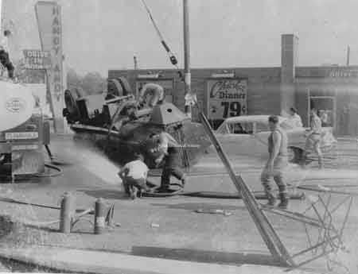

Ward-Thomas Museum


Handy
Andy’s Story
Andy Ochman
Ward — Thomas
Museum
Home of the Niles Historical Society
503 Brown Street Niles, Ohio 44446
Click here to become a Niles Historical Society Member or to renew your membership
Click on any photograph to view a larger image, click on image again to zoom into photograph.
|
A photograph, ca 1939, of the Handy Andy restaurant located on the southwest side of Robbins Avenue in McKinley Heights. PO1.1154 |
Handy Andy Snack Shack: Andy Ochman Unless you were around these parts in 1936, you’d hardly believe that the present modern Handy Andy’s Drive–In is the offspring of a small house trailer that Andy Ochman once used in McDonald as a grocery–on–wheels. Andy’s trailer was the original drive-in stand in this area and he began in the business after he had transferred his traveling grocery store to a permanent location and, as he says, ‘I had to have something to use the trailer for.” |
|
|
Handy Andy Restaurant located
at the intersection of Rt. 422 and |
The old trailer was used one summer, then another trailer was purchased and it was used to seat eight customers. The restaurant continued to mushroom as two more additions were built and finally an almost complete tearing–down and building–up program resulted in the present sumptuous structure finished in the fall of 1946. Before progressing to the 1946 level, however, Andy took three years off from the restaurant business to play around with the 25th Infantry Division in the European Theater of War. Andy joined up April 1, 1943, “but it was no joke,” said the genial restauranteur. Andy was, at different times, attached to the British and French armies and saw his first action at the famous Battle of the Bulge. He finished up in the Rohr Pocket at war’s end. During his wartime sojourn, Handy Andy’s was operated by his sister, Elizabeth Ochman, now owner of Betty’s Dairy on North Main Street. Since returning from service, Andy has been busy getting things rolling again Just recently in East Liverpool, Ohio, he and his sister, Mrs. Anna Lancaster, opened another restaurant, Mr. Handy Andy, which offers the same type of service that the McKinley Heights establishment offers. |
|
|
Handy Andy employees circa 1953. Man at left-Andy Ochman, then Lucille Walters, rest unknown. PO1. 1148 In August 1950, Andy opened his third restaurant located in Hubbard, Ohio. |
On March 1,1949 the 34–year–old restaurant owner took on added responsibilities when he bought the Warren Bus Terminal restaurant which he is now operating, and on April 30th opened up a custard stand adjacent to Handy Andy’s. Andy admits that it keeps him hopping to oversee the three Trumbull County businesses and he personally keeps the books and operates all three. He has a little more help than when he first started in 1936 in the trailer. From that one–man operation, his enterprises now employ 45 persons. “Although that trailer was small and inadequate,”
said Andy, “it was my start–and I don’t have
a picture of it at all,” he added, waving at a display of
pictures on the wall showing the development of the drive–in.
“If you ever run into anyone who has such a snapshot, I’d
appreciate if you’d let me know about it.” Andy is a Kiwanian and a member of several business men organizations in the area. He enjoys outdoor sports such as baseball and golf, but says his hobby is underprivileged children. “I like to see them have a good time,” He says. Each Christmas Andy throws a party for the kids for the Kiwanis Club and boasts, ‘Last year we had 92 children.” The youthful restaurant proprietor is mainly interested in one outside activity at the present time and it apparently overshadows most other interests. He says, “My ambition is to see McKinley Heights grow up—and it will too, if I can do anything about it.” |
|
| |
||
In 1953, Andy built a modern structure that featured a coffee shop, three dining rooms and Teletray curb–service with a covered walkway from the restaurant to the parked cars. Andy was the first restaurant in Trumbull County to offer Teletray service where the operator took the customer’s order and then music played on the speaker while waiting for their order. A waitress carried the customer’s order on a tray which was clamped to the window of the car’s door. Pictured on the left is an Advertisement for Handy Andy restaurant, located at US 422 and State Rt. 169 in McKinley Heights that shows the newly built restaurant as it appeared in 1953. PO1.1152
The bottom image is a view of the eating area with tables and the wall murals. This area had dividers that could be pulled close to make a more private eating or meeting area for smaller groups or parties.
|
||
L-Pictured are the speakers used to place your order for food and drinks. A sliding shelf was used to hold the trays and move them closer to the car. Car hops would deliver your food and collect the trays when the meal was completed. R- Truck crash in front of Handy Andy’s restaurant with the sign visible on left. |
 |
|
| |
||
| Interior view of counter area |
Handy Andy menu |
Handy Andy Little League Champions |
Another landmark was eliminated when the Handy Andy restaurant was demolished June 21, 1972. At the death of Andy Ochman, the restaurant was closed until it reopened as Latsko Restaurant. After another period of being closed, it was sold to Marathon Oil Company and in its place a Marathon Service Station was built. Today a McDonald’s restaurant occupies the site. |
||
Map outline of the new area to be known as "Fairhaven Heights." |
Fairhaven Heights Is Name Chosen For Ochman
Plot. If and when Niles absorbs the 1,100 acre tract north of the city now seeking annexation, it will inherit a carefully planned and attractive allotment which will eventually contain more the 400 homes. Andrew J. Ochman, better known to many as “Handy Andy”, is the developer of the Niles–Cortland Road–Route 422 plat which will feature homes designed for modern, graceful living in keeping with the times. Ochman will direct the development of the new allotment while Hugh Slaugenhaupt of Niles will act as sales manager for the tract which will be known as Fairhaven Heights. |
|
Bounded on the east by Niles–Cortland Road, the north by Rt. 422 and the west by Mosquito Creek, is a site endowed with gently rolling sloping ground and has been subdivided into 407 lots. Fairhaven Heights will be developed by Ochman principally for construction of his own homes but other builders will be allowed to buy lots and build within the allotment, either for themselves or others. Ochman and Slaugenhaupt both feel Fairhaven Heights is the answer for many area residents who want a home at a reasonable price but are leery of developments in which every house is alike. There will be seven basic floor plans offered to prospective buyers in Fairhaven Heights but the variations on those floorplans are virtually limitless. Homes can be built with a basement or on a slab foundation, with or without attached garage and with or without completely modern electric or gas kitchens. Fairhaven Heights will be designed for homes in the medium price class, ranging from $13,000 to $19,000. Homes on the choice lots with basements and completely equipped kitchens will be near the $19,000 mark while smaller homes on a concrete slab will range near $13,000. Veterans will be able to purchase a home in on a GI loan for 5% down plus closing costs and can have up to 30 years in which to pay though they can also finance the homes for a shorter period. Deadline for most World War II veterans on their GI home loans is July 1957 and Fairhaven Heights may offer some of them the home they’ve been waiting for but couldn’t afford until this new development. Ochman revealed this week that he plans to break ground on Fairhaven Heights allotment in early spring and expects to have between 50 and 100 homes completed by December 1956. Fairhaven Heights will include paved streets (asphalt), sewers, city water, gas, and electric power, street lighting, and police and fire protection. Driveways will be built for all homes and Ochman estimates the entire allotment will be completed within about three years though the work could be done sooner if the demand made it necessary. A Cleveland paint company will paint all the
Ochman–built homes in the development and will use a different
color scheme on each home, thus eliminating the appearance of
a “project” in Fairhaven Heights. One of the model homes to be built in Fairhaven Heights is on display at Handy Andy, a restaurant in McKinley Heights on Rt. 422 north of Niles from noon to 9 pm each day and further information on Fairhaven Heights can be obtained there. |
||
|
|
||
{kind=link}
{kind=link}
{kind=link}
{kind=link}
{kind=link}
{kind=link}
{kind=link}
{kind=link}
{kind=link}
{kind=link}
{kind=link}
{kind=link}
{kind=link}